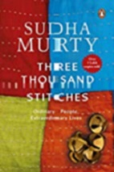

BookSHELL
HOME
MY ACCOUNT
CATEGORIES
The Best Of The Bunch
Top Rated
Fiction
Non-Fiction
Romance
SEARCH
THREE THOUSAND STITCHES

Three Thousand Stitches:
Sudha Murty
Summary of the Book:
Three Thousand Stitches -: Ordinary People, Extraordinary Lives is a book containing eleven different extraordinary tales that are inspired by Sudha Murthy’s life. The first story deals with Sudha Murthy’s desire to eradicate the Devadasi system which she tried hard. How she deals with it forms the crux of this story number one. The second story is about her experience as the only female student in her engineering college and how she managed to tackle the situation. In this way, every story is taken from various incidents that happened in her life. It is an inspiring read for the readers of all age groups with the narration in the simplest English and can make you want to finish the book in one or two sittings.
4.6
Aggregated Ratings
Compare Price And Buy
Amazon Rs.250
BUY
Flipkart Rs.119
BUY